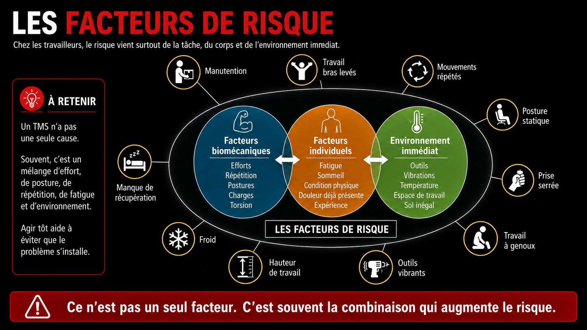
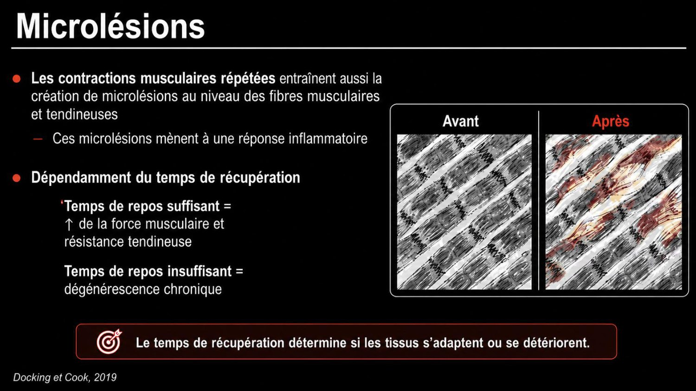

+

Lombalgie
Douleur du bas du dos, le TMS le plus frequent.
En savoir plus
Un outil brise se remplace. Ton dos, tes epaules et tes genoux doivent durer. Cette formation couvre la prevention des troubles musculosquelettiques (TMS) en mine souterraine.
Trouble musculosquelettique : une atteinte des muscles, tendons, nerfs, ligaments ou articulations, causee ou aggravee par le travail.
Cliquez sur une carte pour les details
Douleur du bas du dos, le TMS le plus frequent.
En savoir plus
Inflammation d'un tendon : epaule, coude, poignet.
En savoir plus
Inflammation des bourses sereuses : genoux, epaules.
En savoir plus
Compression du nerf median au poignet.
En savoir plusCe n'est pas seulement une blessure soudaine. La plupart des TMS s'installent par usure, a force de repetition, de force ou de mauvaises postures sur de longues periodes.
Ou ca frappe le plus — clique la silhouette ou une carte
Clique un point rouge pour ouvrir la fiche de la zone

Manutention, flexions, torsions, charges lourdes
Facteurs & prevention
Travail bras leves, vibrations, charges en hauteur
Facteurs & prevention
Postures statiques, tete penchee, casque et lampe
Facteurs & prevention
Mouvements repetes, force en torsion
Facteurs & prevention
Outils vibrants, prises repetees, serrage
Facteurs & prevention
Position accroupie, a genoux, sol inegal
Facteurs & preventionCharges lourdes, efforts intenses.
Memes gestes, encore et encore.
Dos courbe, bras leves, torsions.
Outils et machines vibrants.
Reduit la souplesse des tissus.
Rester fige longtemps.

🔍 AgrandirUn TMS n'a pas une seule cause : c'est un melange d'effort, de posture, de repetition, de fatigue et d'environnement. Agir tot aide a eviter que le probleme s'installe.
Fatigue accumulee, vigilance qui baisse en fin de quart.
Tiges, boyaux, equipements lourds a deplacer souvent a la main.
Travailler plie, accroupi ou a genoux, dans des positions imposees.
Deplacements instables, charge supplementaire pour le dos et les genoux.
Les symptomes apparaissent progressivement. Quand la maladie est bien declaree, il est deja tard pour intervenir.
Le bon moment pour agir, c'est a l'etape 1. Plus on attend, plus la recuperation est longue et incertaine.

🔍 AgrandirPlus la douleur dure, plus la recuperation devient complexe. Les douleurs chroniques sont rares mais associees a un mauvais pronostic. Une prise en charge est alors necessaire.
Les TMS lies au travail font partie des troubles professionnels les plus courants. Sources : CNESST (2023) · INSPQ, Troubles musculosquelettiques lies au travail.
Un TMS apparait quand la charge imposee au corps depasse, de facon repetee, sa capacite a recuperer.
La perception de l'effort represente l'intensite relative du travail musculaire selon les capacites maximales du travailleur. Clique un niveau ou fais glisser pour explorer l'echelle de Borg.
 🔍 Agrandir
🔍 AgrandirUne meme force peut representer un effort relatif tres different pour deux individus.
 🔍 Agrandir
🔍 AgrandirLe muscle a besoin d'energie (ATP) pour se contracter. Moins l'energie est disponible, plus la fatigue apparait vite.
 🔍 Agrandir
🔍 Agrandir 🔍 Agrandir
🔍 AgrandirTravail statique : le muscle reste contracte, le flot sanguin est comprime, la fatigue arrive plus vite.
 🔍 Agrandir
🔍 AgrandirTravail dynamique : contraction et relachement alternent, le sang circule mieux, l'effort est plus facile a soutenir.
Le statisme musculaire fatigue le corps. Meme assis, les muscles travaillent. Quand le muscle reste contracte, ca peut causer fatigue, inconfort et douleurs.
 🔍 Agrandir
🔍 Agrandir 🔍 Agrandir
🔍 AgrandirVarier la posture et prendre des micro-pauses reduit la fatigue musculaire. Bouger souvent aide a proteger les disques du bas du dos.
Le reparateur numero un de ton corps. Pendant que tu dors, ton corps se repare.
Muscles, tendons et articulations se reconstruisent surtout la nuit.
L'hormone de croissance, liberee en sommeil profond, repare les tissus.
Bien dormir abaisse la sensibilite a la douleur et a l'inflammation.
Memoire et concentration se consolident. On reste alerte au quart suivant.
Quand tu manques de sommeil, tout le corps en paie le prix.
Rester eveille 17 a 19h d'affilee affecte la vigilance autant qu'un taux d'alcool de 0,05.
Le corps n'aime pas naturellement dormir le jour. Ces reflexes aident a mieux recuperer entre les quarts.
Rideaux opaques, bouchons, masque. Le noir imite la nuit.
Meme rituel avant de dormir, meme si c'est le matin.
Pas de cafe dans les 6h avant le sommeil prevu.
Une courte sieste de 20 a 30 min avant un quart de nuit.
S'exposer a la lumiere vive pour relancer la vigilance.
Avertir l'entourage, couper les notifications.
Quatre leviers du quotidien : eau, alimentation, mouvement et habitudes.
Un muscle deshydrate fatigue plus vite, devient plus raide et crampe plus facilement. Sous terre, dans la chaleur et avec l'effort, on perd beaucoup d'eau sans s'en rendre compte. La deshydratation reduit la concentration et augmente le risque de faux mouvement.
La soif est deja un signe de deshydratation.
A portee de main, tu bois plus souvent.
Urine claire = bien hydrate. Foncee = bois plus.
L'alimentation, c'est du carburant.
Repas complets : grains entiers, legumes, proteines. Ils evitent les chutes d'energie en milieu de quart.
Viande, poisson, oeufs, legumineuses : les briques qui reconstruisent les muscles sollicites.
Boissons et collations sucrees : un coup vite suivi d'une baisse. Vigilance en dents de scie.
Fruits, legumes, poissons gras aident le corps a gerer l'inflammation liee a l'effort.
Bouger et garder la mobilite. Un corps fort et souple encaisse mieux la charge du travail. Le mouvement hors travail fait partie de la prevention.
Un dos et des abdominaux solides protegent la colonne pendant la manutention.
Des muscles souples bougent dans une plus grande amplitude sans se blesser.
Marcher, bouger les jours de conge. Rester assis longtemps raidit aussi le corps.
Tabac, alcool, cannabis : leurs effets sur la recuperation.
Reduit la circulation vers les tissus, donc une guerison plus lente des muscles et tendons sollicites.
Aide a s'endormir mais fragmente le sommeil profond. Moins de reparation, plus de fatigue le lendemain.
Affecte la vigilance, la coordination et le temps de reaction. Effet possible plusieurs heures apres.
Ce que tu peux appliquer des demain pour proteger ton dos, tes epaules et tes articulations.
 🔍 Agrandir
🔍 AgrandirCharge pres du corps, respecter les courbes naturelles du dos, pivoter avec les pieds, hauteur de travail adaptee : adopter de bonnes postures reduit la pression sur la colonne, les muscles et les articulations.
 🔍 Agrandir
🔍 AgrandirCharge loin du corps, dos arrondi sous effort, torsion du tronc et bras en extension prolongee : les postures qui augmentent la pression sur la colonne.
Fais glisser pour simuler l'angle du bras par rapport au corps. Plus l'angle augmente, plus la contrainte sur l'epaule est elevee. Au-dela de 60° soutenu, le risque augmente fortement.
 🔍 Agrandir
🔍 AgrandirEpaules, poignets et mains : plus la position s'eloigne de la position neutre, plus la contrainte augmente. 0 a 20 degres = confort, 20 a 45 = a surveiller, plus de 45 = contraignant.
Un muscle froid se blesse plus facilement. 5 minutes d'echauffement valent mieux que des semaines d'arret.
Alterne debout, accroupi, en mouvement. Aucune posture n'est bonne trop longtemps.
Quelques secondes pour relacher les muscles avant qu'ils ne se crispent.
Quand c'est possible, change de geste pour reposer les zones sollicitees.
Quelques etirements cibles au fil du quart gardent les muscles souples.
Un inconfort qui revient n'est pas une faiblesse a cacher. C'est une information a partager vite.
Toute la prevention des TMS tient en deux piliers.
Ton corps, c'est ton premier outil de travail. Prends-en soin aujourd'hui pour qu'il dure toute ta carriere.
L'attestation se debloque une fois la formation complete et le quiz reussi.
8 questions pour valider l'essentiel de la formation. Choisis une reponse pour voir l'explication.
Suivi des resultats du travailleur sur ce poste (donnees locales).